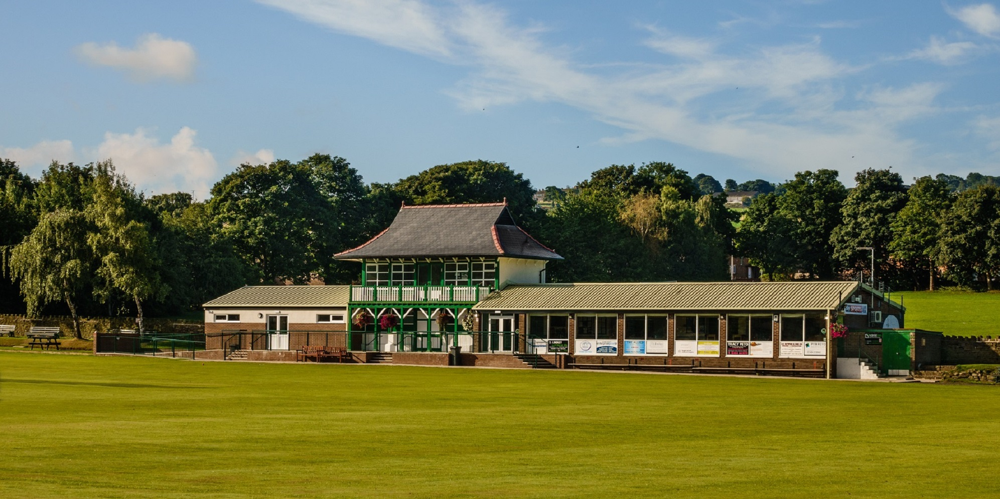

It hosted a Geoff Boycott benefit match in 1969 and in 2005 the First XI won the Huddersfield League Title for the first time. However they didn’t stop there winning it again in 2006, 2007 and 2008 to create history in becoming the first club ever to win four consecutive League Titles.
They also won the Title in 2010 and 2011 along with the Sykes Cup in 2005 and 2006 and the much coveted Black Sheep Yorkshire Champions Trophy in 2008. These on field achievements make Honley CC one of the most successful Clubs in the League's history. We have been a member of the Drakes Huddersfield Cricket League from 1894-1915 and 1920 to present day. The Club also boasts a thriving Junior section where our local youngsters learn their craft from qualified coaches.
Do you have any old photographs of The Pavilion that you'd like to share? to honleycc@gmail.com
| Life memberships: | ||
|---|---|---|
| Family Life Membership | £550 | |
| Single Life Membership | £300 | |
| Senior Citizen Life Membership | £175 | |
| Player memberships: | ||
| *Junior Playing Member (up to u17's - includes training fees) | £50 | |
| **Senior Playing Member | £40 | |
| Social memberships: | ||
| Social Member | £25 | |
| Senior Citizen Membership | £18 | |
| * Additional siblings are at a discounted rate of £40.00 per child. | ||
| ** 1st XI membership and match fee early payment is £155.00 and the 2nd XI is £135.00. Must be paid by 12th May to qualify for this discount. | ||
New for 2019, we are introducing a membership / loyalty card system.
The card is available to all senior playing, social and life members. In a nutshell, it works very similar to a points card you get at a supermarket, when becoming a member you will be given a membership card, produce this to the bar staff when making a purchase from the bar (drinks only) and they will transfer points onto your card for that particular purchase.
When you have accumulated enough points will be able to redeem these for purchases. Also, every membership card is individually numbered and will be entered into monthly draws, where the winners will receive points on their card.
2019 Senior Cricket fixtures: https://www.huddersfieldcricketleague.co.uk/pages/club-by-club-fixtures
2019 Junior Cricket fixtures: https://hjcl.play-cricket.com/